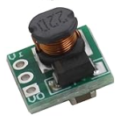
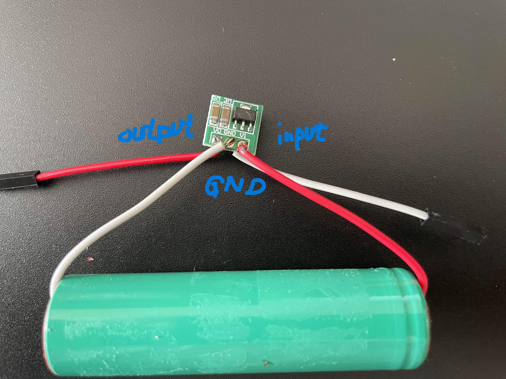
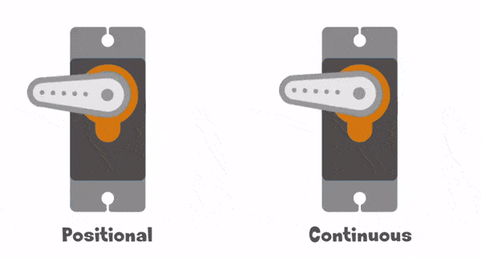
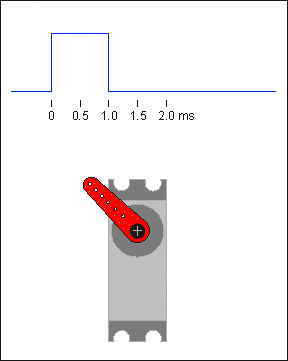
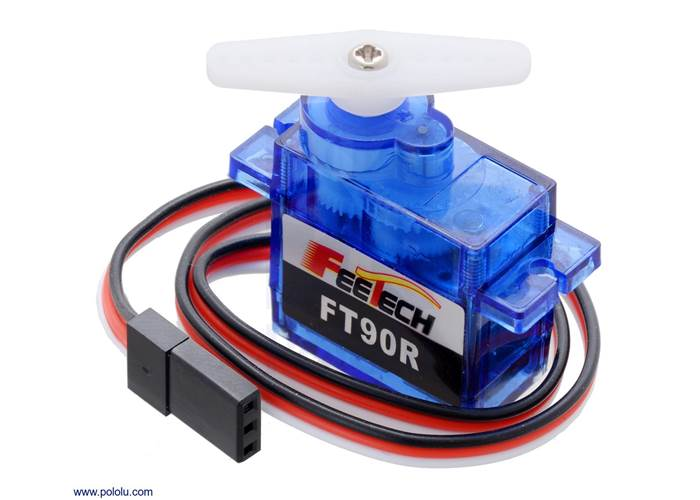
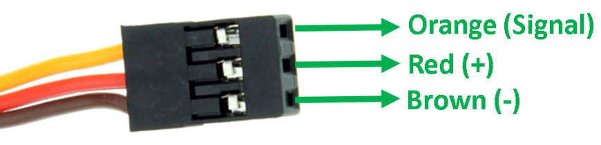
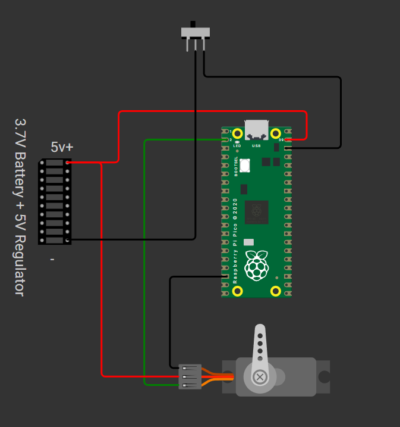

What You Need
3.7V Li-ion Battery (e.g., 1x18650 cell)
Battery Holder with Switch or JST Connector
Raspberry Pi Pico or Pico W
360° Continuous Rotation Servo Motor (e.g., FS90R)
Breadboard & Jumper Wires
Multimeter (optional for verifying power)
Screwdriver (if using screw terminals)
5V Regulator (for stable servo operation)
Step-by-Step Path
🔋 Step 1: Power Supply Working Principle
The 3.7V Li-ion battery is connected to a 5V regulator to provide a stable 5V output. This 5V output powers both the Pico (via VSYS) and the servo motor, ensuring reliable operation. The 5V regulator is essential for stable servo and board operation when using a single-cell Li-ion battery.

5V Regulator
3.7V Li-ion Battery- The Pico's VSYS pin can accept voltages from 1.8V to 5.5V, and onboard regulators convert it to 3.3V logic.

- A 3.7V Li-ion battery (nominally 3.7V, up to 4.2V fully charged) is connected to a 5V regulator to provide a stable 5V output.
- The 5V output from the regulator powers both the Pico (via VSYS) and the servo motor, ensuring reliable operation.
- The 5V regulator is essential for stable servo and board operation when using a single-cell Li-ion battery.
🌀 Step 2: 360° Servo Motor Principle
- Unlike regular servos, 360° servos rotate continuously like DC motors.

- PWM signal controls the speed & direction:

A 360° servo interprets the width of the PWM pulse to determine both speed and direction. A pulse width near the center value (e.g., 1.5 ms or duty_u16(5000)) stops the servo. Increasing the pulse width rotates the servo in one direction (forward), while decreasing it rotates in the opposite direction (reverse). The further from center, the faster the rotation. Unlike standard servos, which move to a specific angle, a 360° servo keeps spinning as long as the PWM signal is away from center. - GP1 is now used as the PWM signal output.


🔗 Step 3: Connect the Circuit
- Connect the 3.7V battery to the input of the 5V regulator.
- Connect the 5V output to Pico VSYS and Servo VCC.
- Battery GND to Pico GND and Servo GND.
- Servo Signal = GP1 on the Pico.


💻 Step 4: Upload the Code & Mini Project
- Upload the following code to your Pico to control the 360° servo using PWM on GP1.
from machine import Pin, PWM
import time
# Initialize PWM on GPIO 15
servo = PWM(Pin(1))
servo.freq(50)
led = Pin(25, Pin.OUT)
def clockwise():
servo.duty_u16(8000) # Forward (adjust value based on your servo)
def counterclockwise():
servo.duty_u16(3000) # Reverse (adjust as needed)
def stop():
servo.duty_u16(5000) # Neutral pulse to stop
# Loop to demonstrate motion
while True:
led.value(1)
print("Spinning Clockwise")
clockwise()
time.sleep(2)
print("Stopping")
stop()
time.sleep(1)
print("Spinning Counter-Clockwise")
counterclockwise()
time.sleep(2)
print("Stopping")
stop()
time.sleep(1)
💡 Result: The motor moves forward for 2 seconds, stops, then moves backward.
🧪 Step 5: Test & Demo
- Send PWM from GP1 to test stop, forward, reverse. Observe the servo's response.

Complete Tutorial (Watch on YouTube)
Quick Recap
- ✅ 3.7V Battery Powers Pico & Servo
- ✅ 5V Regulator Provides Stable Power
- ✅ GP1 Set as PWM Pin
- ✅ Continuous Servo Connected
- ✅ Test Code Runs Successfully